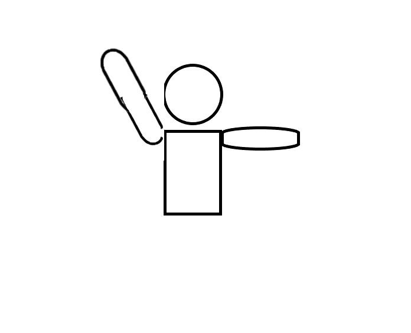

ノックオンまたはインテンショナルノックオン
アンプレアブル（ラック、タックル）
アンプレアブル（モール）
スクラムホイール
ノットストレート（ラインアウト）
パイルアップ（インゴール）
フットアップ
ノットロールアウェイ
オーバーザットップ
ダイブイン
オフサイド
ノットストレート
オブザゲート
オフサイド（ラック、モール）
フットアップ
ハンド
ハイタックル
コラプシング（スクラム）
フロントローの引き倒し
バージング
ラインアウトでの寄りかかり
ラインアウトで相手を押す（バージング？）
スタンピング
スローフォワード
モールアンプレアブル
ノットストレート（スクラム）
オブストラクション
ノットリリースザボール
スクラムコラプシング
ノーバインド
コラプシング（ラック、モール）
ノット１ｍ
ノット５ｍまたはノット10ｍ
アクシンデンタルオフサイド
ノットストレート（スクラム）
ノット10ｍバック
レイトチャージ
コラプシング（ラック、モール）
スピアタックル（危険なタックル）
パンチング
リフティング
タックルホールディング